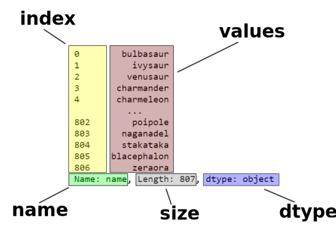
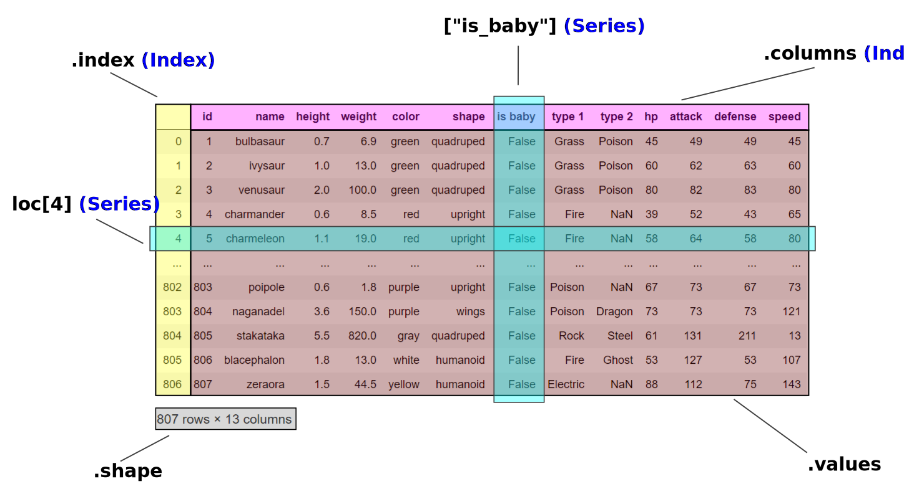

Před jakoukoli složitější analýzou je třeba naučit se základy práce se zpracovávanými daty. Data můžou být různého charakteru - jednorozměrná, dvourozměrná, strukturovaná, nestrukturovaná, obrazová, zvuková... V lekcích explorativní datové analýzy budeme pracovat s daty převážně tabulkovými - tedy takovými, které jistě znáš ze svého oblíbeného (nebo neoblíbeného) tabulkového procesoru ("spreadsheetu"). Obvykle každý řádek takové tabulky odpovídá nějaké věci, exempláři čehosi, případně nějakému pozorování. V jednotlivých sloupcích se pak nacházejí jednotlivé vlastnosti či měřené veličiny pro tyto věci charakteristické.
Ve světě Pythonu se pro zpracování tabulkových dat nejčastěji používá knihovna pandas. Ta umožňuje načítat data z mnohých formátů (včetně sešitů XLS(x)), různě je upravovat, velice efektivně počítat se sloupci, přímo zkoumat některé statistické ukazatele a v neposlední řadě výsledky pěkně vizualizovat. Tato lekce tě seznámí se základními používanými koncepty a naučí tě přistupovat k jednotlivým sloupcům, řádkům a buňkám.
Více o knihovně pandas najdeš na jejích domovských stránkách: https://pandas.pydata.org/
pandas
#
import pandas as pd # K pandas budeme přistupovat pomocí aliasu pd
💡 Tento příkaz sice importuje modul (resp. knihovnu) pandas, ale ta nebude dostupná pod svým obvyklým jménem, nýbrž pod aliasem pd. Naopak jméno pandas nebude nadále definováno. Při běžném programování se snažíme aliasům vyhýbat, protože snižují čitelnost kódu pro další programátory. U datové analytiky je to jinak, protože použití jednoho aliasu, který je navíc velmi běžný, nám ušetří spoustu psaní.
# pandas -> Vyvolalo by NameError
Skočíme do pandas rovnýma nohama a ukážeme si typický příklad dat, která s touto knihovnou budeme zpracovávat.
Pro čtení dat má Pandas celou řadu funkcí read_*, díky kterým si poradí s mnoha různými formáty. Poměrně častým je formát CSV ("comma-separated values" - wiki), ve kterém každému záznamu odpovídá jeden řádek, jednotlivé vlastnosti záznamu pak jsou odděleny čárkami (případně jiným znakem).
Pro práci s tímto notebookem si nejdříve stáhni soubor s daty z tohoto odkazu. Data pro pokusy jsou vytvořena z komplexního Pokedexu na Githubu.
tabulka_pokemonu = pd.read_csv("static/pokemon.csv")
Data (ať už to je cokoliv) jsou nyní načtená v paměti, odkazuje na ně proměnná tabulka_pokemonu. Pojďme se podívat, co se v nich ukrývá.
tabulka_pokemonu
Pokud vše zafungovalo, jak má, měl(a) bys před sebou mít relativně pěkně naformátovanou tabulku. Základní zobrazení v notebooku ti ukáže prvních pět a posledních pět řádků (kdo by riskoval, že mu tisíce řádků zahltí okno prohlížeče?) v tabulce společně s informací o celkovém počtu řádků a sloupců. V tomto případě tabulka obsahuje celkem 13 vlastností (pojmenovaných sloupců) pro 807 různých pokémonů (očíslovaných řádků).
⚠️ Varování: V tomto jednoduchém případě se tabulka načetla správně hned na první pokus, bez jakýchkoliv specifických parametrů, všechny sloupce se zdají obsahovat použitelné hodnoty. To je (zejména u formátu CSV) vlastně z pekla štěstí. Obvykle jsou se vstupními daty problémy - kupříkladu nemají popsané sloupce (případně je mají popsané podivně), používají zvláštní oddělovače záznamů nebo desetinné části čísel, v mnoha řádcích chybějí hodnoty (nebo jsou špatně opsané), ... Čištění dat se budeme věnovat někdy příště.
Co je ten objekt uložený v proměnné tabulka_pokemonu vlastně zač? Jaké je třídy?
pandas - DataFrame, Series, Index
#
type(tabulka_pokemonu)
Odpověď zní DataFrame. Tento termín (používaný i v dalších oblíbených statistických jazycích, například R) je nespíš bez českého ekvivalentu, a tak nadále budeme mluvit o tabulkách či o instancích třídy DataFrame. Pokusme se nyní náš první DataFrame rozpitvat.
⚠️ Varování: Jistě si brzy všimneš, že se DataFrame svými funkcemi hodně podobná sešitu v tabulkovém procesoru, ale je potřeba si uvědomit, kde tato paralela končí. Na rozdíl od sešitů v Excelu nebo LibreOffice Calcu DataFrame obsahuje "pouze" suchá data, neukládá žádné formátování a nenabízí žádný "editor". Pěkná vizuální reprezentace je jen otázkou souhry pandas s Jupyter notebookem, případně si pro to můžeš napsat vlastní kód.
vysky = tabulka_pokemonu["height"]
vysky
💡 DataFrame se mimo jiné chová podobně jako slovník (dict) - když do hranatých závorek vložíš nějaký klíč, získáš takto pojmenovaný sloupec. Ve skutečnosti hranaté závorky (square brackets) umožňují vybírat z tabulek na základě různých dalších kritérií, ale k tomu se ještě dostaneme.
Naše pitva pokračuje zjištěním, co je zač proměnná vysky.
type(vysky)
Sloupce jsou typu Series (česky řada, ale ani toto slovo nebudeme používat). Tento typ vypadá jako seznam (list). Ověříme si, jestli se tak i chová:
vysky[0] # První výška? ✓
vysky[-5:] # Posledních pět výšek? ✓
Úkol: Zkus ještě nějaké další operace se seznamy, které už umíš, aplikovat i na vysky. Někdy to půjde, někdy ne.
Není také žádný problém mezi seznamy a Series převádět. Vůbec nejjednodušší způsob, jak můžeš vytvořit vlastní Series (pomni, že mimo kontext tabulky), je vytvořit instanci této třídy s nějakým seznamem jako argumentem:
cisla = pd.Series([1, 2, 3])
cisla
A jde to i naopak:
cisla.tolist() # Varianta 1 (preferovaná, rychlejší)
list(cisla) # Varianta 2
Čím se tedy Series od seznamu liší a v čem spočívá jeho výhoda?
Každý sloupec má především následujících pět základních vlastností:

vysky[:50].values # Z estetických důvodů si sloupec trochu zkrátíme
type(vysky.values)
💡 Hodnoty jsou v Series uloženy ve speciálním formátu postaveném na typu ndarray z knihovny numpy. Té se věnovat nebudeme, ale zejména v případě numerických hodnot ušetří místo v paměti a zrychlí matematické operace (například sečíst všechny hodnoty v Series je výrazně rychlejší než v seznamu).
vysky.dtype
💡 Na rozdíl od seznamů by všechny prvky Series měly být stejného typu (pokud nejsou, zvolí se nejbližší společný nadtyp). pandas má vlastní sadu typů, tzv. dtypes, která částečně kopíruje výchozí datové typy v Pythonu, ale (především u numerických typů) se blíží více k tomu, jak s nimi pracuje procesor. A nehledejte u nich dědičnost (dobrá zpráva?). Nejběžnější typy si představíme příště - společně s operacemi, které se se sloupci dají dělat.
vysky.index
💡 K prvkům seznamu přistupuješ pomocí číselného pořadí (0 - první prvek, 1 - druhý, ...), ze slovníku vybíráš podle klíče, pandas zavádí zobecněný index, který může být číselný, řetězcový, ale třeba i postavený na datu/času. O různých indexech viz níže.
vysky.name
💡 Series může, ale nemusí mít jméno. Pozor, je to hodnota uložená uvnitř samotného objektu, nijak nesouvisí se jménem proměnné, do které ho uložíš (ale u sloupce v tabulce se použije pro přístup k němu).
vysky.size
💡 Tato vlastnost říká, kolik je v Series prvků. Není nijak magická, chová se jako len u seznamu (a ostatně len lze použít i na Series). Pro úplnost uvádíme, že na rozdíl od ostatních vlastností je tato jen pro čtení.
Úkol: Zjisti hodnoty atributů .name, .index, .dtype, .values a size u objektu cisla. Všimneš si něčeho zajímavého? Případně se podívej na totéž u některých dalších sloupců z tabulka_pokemonu.
Při vytváření objektů Series lze tyto atributy (až na size a v omezené míře dtype) explicitně uvést:
vek = pd.Series(
[27, 65, 14],
name="Věk",
index=["Karla", "Martina", "Žofie"],
dtype=float,
)
vek
Úkol: Vytvoř objekt Series, který bude obsahovat seznam barev, zvířat, čísel nebo nějaké jiné kategorie věcí, které máš rád/a.
Ve výchozím stavu je u sloupců i tabulek použit bezejmenný číselný index, který řadí prvky po sobě od nuly výše:
vysky.index
Nicméně existují i další typy indexů (většinou výčtové):
vek.index
udalosti = pd.Series(
["Nezávislost Československa", "Konec druhé světové války", "Sametová revoluce"],
index = pd.Index([1918, 1945, 1989], name="rok") # Index může mít i jméno
)
udalosti
udalosti.index
Tento index je číselný, ale hodnoty nejsou (resp. jsou, ale nemusely by být) srovnané a jsou "děravé".
udalosti_presne = pd.Series(
["Nezávislost Československa", "Konec druhé světové války", "Sametová revoluce"],
index = pd.DatetimeIndex(['1918-10-28', '1945-05-08', '1989-11-17'])
)
udalosti_presne.index
Hodnoty indexu potom lze použít v hranatých závorkách pro přístup k prvkům Series, podobně jako u slovníku. Možnosti jsou ale mnohem širší, ukážeme si je za chvíli v kontextu DataFrame.
vek["Martina"]
Úkol: Jaký index má tabulka pokémonů?

Když už jsme se seznámili se sloupci a indexy, můžeme se vrátit k tabulce, resp. DataFrame.
Podobně jako je Series kontejnerem hodnot spojených s indexem, DataFrame je dvojrozměrným kontejnerem, který kromě hodnot (.values) obsahuje hned dva indexy - jeden pro řádky a jeden pro sloupce:
tabulka_pokemonu.columns # Seznam sloupců
tabulka_pokemonu.index # Index (seznam řádků)
tabulka_pokemonu.values
tabulka_pokemonu.shape # Velikost (počet řádků x počet sloupců)
Zkonstruovat novou tabulku lze (kromě načtení dat z externího souboru) několika způsoby, z nichž asi nejčastější jsou ze seznamu slovníků nebo slovníku seznamů. Podobně jako u Series, některé atributy lze dodat jako další argumenty.
pd.DataFrame({
"cislo": [1, 2, 3],
"pismeno": ["a", "b", "c"]
})
pd.DataFrame([
{"jmeno": "máslo", "cena": 42.90},
{"jmeno": "sýr", "cena": 31.90},
{"jmeno": "kečup", "cena": 49.90 },
],
index=["artikl1", "artikl2", "artikl3"]
)
Úkol: Vytvoř tabulku (DataFrame), která bude obsahovat sloupce "jméno", "příjmení" a "věk" pro postavy z nějakého tvého oblíbeného románu či filmu. Můžeš, ale nemusíš v ní použít index.
Řádky, sloupce, číselné pořadí, klíče, rozsahy... Objekty pandas se někdy chovají jako seznamy, někdy jako slovníky. Jak z nich tedy dostat hodnoty? Je toho hodně, a proto přistupování k částem tabulky nevystačíme s prostými hranatými závorkami [].
Pro začátek si upravíme naši tabulku s pokémony tak, aby měla zajímavý a snadno uchopitelný index. Použijeme k tomu dvě metody třídy DataFrame (obě vrací novou instanci DataFrame, odvozenou od instance, na které je voláme):
set_index vrací tabulku, ve které je některý ze sloupců použit jako index
sort_index vrací tabulku, která obsahuje stejný index, ale seřazený
pokemoni = tabulka_pokemonu.set_index("name").sort_index()
pokemoni
pokemoni.index
[]
#
Začneme s hranatými závorkami:
Series vrací hodnotu, jíž přináleží příslušný klíč v indexu (to jsme si ukázali výše).DataFrame vrací sloupec s příslušným jménempokemoni["height"]
Pokud do závorek u DataFrame vložíš několik hodnot v seznamu, dostaneš více sloupců (a tedy DataFrame!):
pokemoni[["height", "weight"]]
Úkol: Co se stane, když totéž učiníš se Series?
Úkol: Který z posledních 5 pokemonů (abecedně seřazených) je nejrychlejší?
.loc[]
#
Když chceme získat nějaký řádek, použijeme atribut loc, takzvaný indexer. Pozor, není to metoda a nepoužívají se závorky kulaté, nýbrž hranaté. (Má to své důvody - jedině tak můžeme elegantně používat zkrácený dvojtečkový zápis pro rozsahy).
pokemoni.loc["abra"]
Zajímal nás řádek s indexem "abra" a dostali jsme očekávaný výsledek - Series, kde každá hodnota je oindexovaná jménem sloupce.
Ovšem situace začne být zajímavá, když začneme v indexu používat rozsahy (pomni, že něco takového slovníky neumí):
pokemoni.loc["z":]
Pandas inteligentně pochopil, že chceme všechny klíče v nějakém rozsahu, dokonce aniž by byly v indexu přítomny.
⚠️ Toto ovšem lze učinit jen se seřazeným indexem. Pokud index seřazený není, vybírá se rozsah existujících klíčů v pořadí, jak jdou za sebou, včetně obou krajních hodnot, tedy takto:
pokemoni.loc["zangoose":"zygarde"]
Když se chceš dostat ke konkrétní hodnotě, použiješ v hranatých závorkách dva klíče v pořadí řádek, sloupec.
pokemoni.loc["zorua", "color"]
Pozor ale na počet závorek. Pokud se v závorce vyskytne seznam s klíči, vyberou se v dané dimenzi všechny odpovídající řádky či hodnoty:
pokemoni.loc[["zorua", "zubat"]]
Přístupy lze samozřejmě (nebo ne tak samozřejmě?) kombinovat, a tak můžeš vybírat rozsahy i seznamy v řádcích a sloupcích nezávisle na sobě:
pokemoni.loc["j":"k", ["color", "attack"]]
Úkol: Jakou barvu mají (všichni) pokémoni, jejichž jméno začíná na "z"?
Úkol: Kolik pokemonů existuje se jménem mezi písmeny "d" a "f"?
Úkol: Ze seznamu všech pokemonů jsi vyber 5 s jménem tobě sympatickým (vyhni se prvním a posledním pěti). Jakého jsou typu? Který je nejvyšší a který nejtěžší?
.iloc[]
#
Když chceme na chvíli zapomenout na to, jaký index je u tabulky nebo sloupce použit, můžeme k prvkům přistupovat přímo přes jejich pořadí (čísla řádku nebo sloupce). Toto je v zásadě intuitivní a odpovídá indexování, na které jsi zvyklá/ý z práce se seznamy.
pokemoni.iloc[44]
pokemoni.iloc[-10:]
I tady jde kombinovat. A tak, až tě někdo požádá o hodnotu, která se nachází "vlevo dole", můžeš zkusit:
pokemoni.iloc[-1,0]
Na závěr, jen pro úplnost si představíme tři pohodlné funkce, které vybírají první, poslední nebo náhodné řádky z tabulky (všechny tři mají nepovinný parametr udávající počet požadovaných řádků):
pokemoni.head() # Prvních několik řádků
pokemoni.tail() # Posledních několik řádků
Úkol: Umíš napsat obdobu funkce .tail() pomocí indexování?
pokemoni.sample() # Náhodný řádek
Úkol (bonusový): Umíš napsat obdobu funkce sample() pomocí indexování (a modulu random)?
V této lekci jsme si ukázali tři základní typy knihovny pandas:
Series coby jednorozměrný objekt obsahující hodnoty stejného typuDataFrame coby dvojrozměrná tabulka složená z více SeriesIndex coby zobecněný popis, jak přistupovat k prvkům Series nebo DataFrameKromě toho jsme se naučili z tabulek vybírat sloupce, řádky, i jednotlivé hodnoty.
V další lekci si ukážeme, jaké datové typy (přesněji dtypes) lze v pandas použít, začneme počítat a vůbec napodobovat funkce tabulkových procesorů.
Místní zoo zvažuje investici do nového pavilonu vyhrazeného pro Pokemony. Ředitel zoo, pan Felix, si ale není jist, jestli by se tato investice vyplatila a co všechno by to pro zoo znamenalo. Někdo mu doporučil, aby si na pomoc pozval tebe (my za to nemůžeme, přísaháme - pozn. autoři kurzu). Pan ředitel sepsal seznam otázek, na které by chtěl znát odpověd.
pokemon.csv)pokemon.csv. Kteří Pokemoni by byli v první, v druhé a v poslední skupině?pokemon.csv jsou na pozicích 207, 320 a 796, nikto si však nepamatuje, o které Pokemony se jednalo. Jak se jmenují?